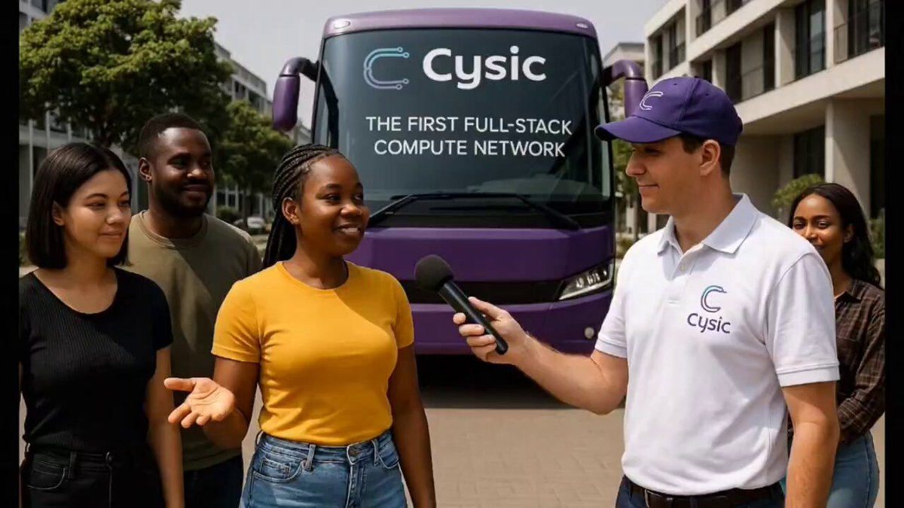
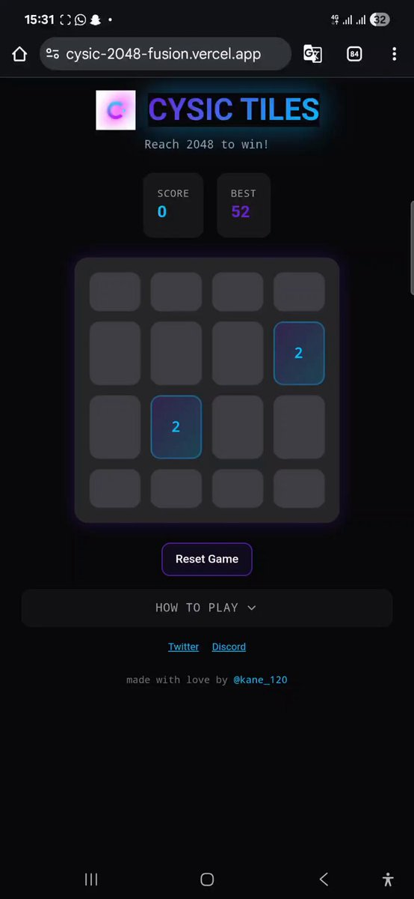
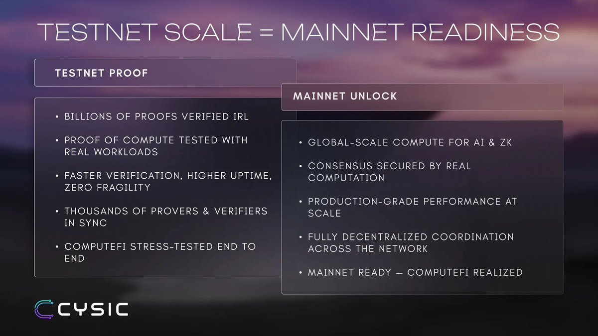
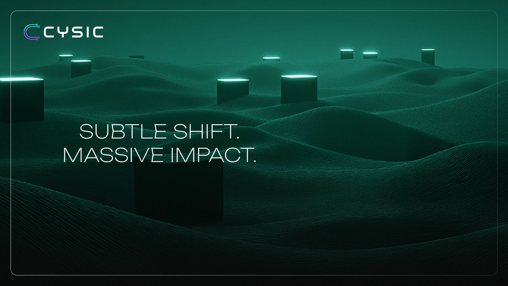
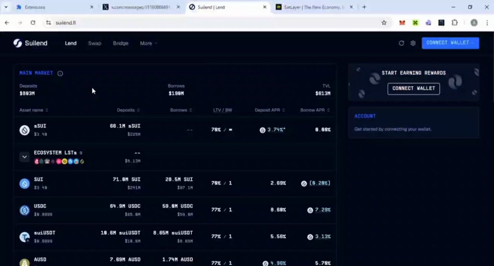
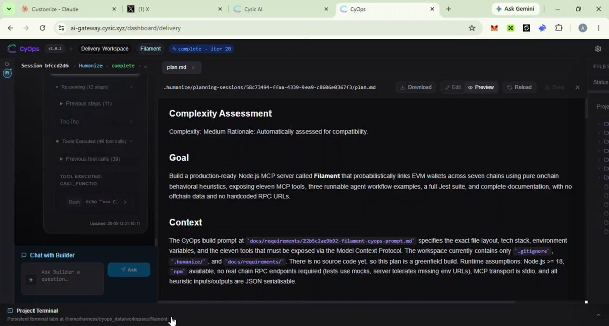
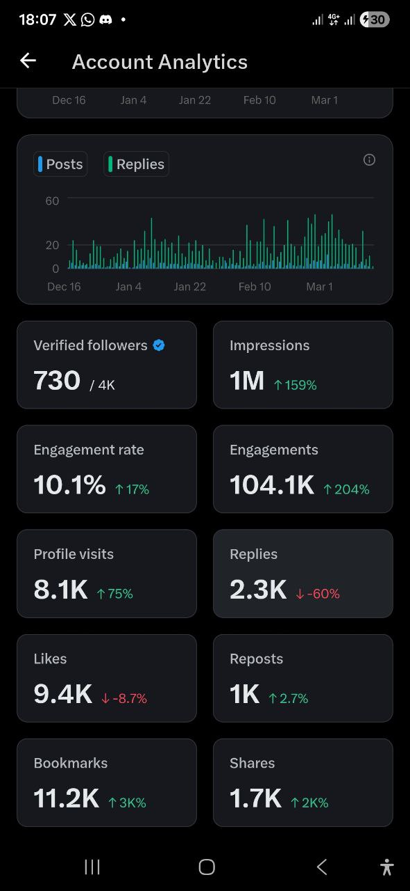

Position the story
Turn technical value into a clear narrative the right community can understand and repeat.
Web3 Community Influencer · Content Strategist
I help Web3 teams become understood, trusted, and talked about.
Through clear content, campaign storytelling, AI video, and community activations, I turn technical products into conversations people join.
About
I am Kane, a Web3 community influencer and strategist. I use educational content, social storytelling, AI video, and hands-on activations to make technical ideas feel relevant to the people a project wants to reach.
My background includes ambassador work with Cysic Network and co-founding JurixAI. That gives me both a community-facing and founder-facing perspective on what earns attention, creates trust, and moves people to participate.
Community influence proposal
I work as an extension of a Web3 team: understanding the product, finding the human story, creating content people can follow, and giving the community a useful reason to respond.
Discuss a community campaignTurn technical value into a clear narrative the right community can understand and repeat.
Create threads, explainers, social videos, and campaign formats that keep the project visible.
Design challenges, tutorials, games, and feedback loops that move people from viewing to doing.
Selected work
Public campaigns across privacy, BTCFi, ComputeFi, technical education, and product storytelling, each designed to make a community care or act.


03 / Community activation
I took Cysic beyond standard posts with a short campus interview about ComputeFi, then paired education with interactive community games such as Cysic Tiles and a memory-flip challenge.


04 / Technical education
My Cysic explainers connect the technical story to the user story: why hardware matters for proving, what the testnet demonstrated, and how ComputeFi changes access to AI, ZK, and mining workloads.
01 / Social storytelling
I created a serialized AI-video campaign that framed blockchain privacy through everyday stakes: a finance worker, artist, doctor, journalist, teacher, gamer, and creator. The format made an abstract infrastructure problem personal and easy to follow.

02 / User education
For SatLayer, I produced practical BTCFi explainers and step-by-step tutorials covering xBTC restaking through Sui and the full LBTC journey from bridging to restaking.

05 / Product storytelling
For Filament, I shaped the public narrative and demonstrated how the MCP project analyzes onchain behavior to identify probabilistic links between wallets across multiple EVM chains.
What I bring
A clear message, audience angle, and content direction people can recognize.
Threads, explainers, guides, and narratives that make infrastructure approachable.
Short-form stories, campaign concepts, and visual education made for social reach.
Games, challenges, and participation loops that give communities something to do.
Community insight that helps teams improve communication, visibility, and growth.
Results
These analytics show sustained Web3 content performance, with meaningful actions beyond impressions: visits, bookmarks, shares, and reposts.

A community influence proposal for Web3 teams
I am available for ambassador roles, launch campaigns, content partnerships, community activations, and ongoing strategy.